优雅且高效的使用Chrome-Developer-Tools（上）
Chrome Developer Tools是前端开发不可缺少的利器，这里介绍几个有趣的Command Line API，使得开发调试过程中，不经意的透露出那点点的优雅。
主要内容:
- 记录ex的 $_
- 记录现任的 $0
- 简洁的 $(selector) 和 $$(selector)
- 拷贝Object的 copy(Object)
- 更优雅的打断点 debug(function)
- 列出对象的所有属性 dir(objcet) 和 列出事件的getEventListeners(object)
- 记录方法的 monitor(function) 和 记录事件的 monitorEvents(object[, events])
- 表格化显示object table(data[, columns])
记录ex的 $_
$_是上一次表达式的计算结果。
举个例子： 需要计算每天,每年都有多少秒。
很简单：
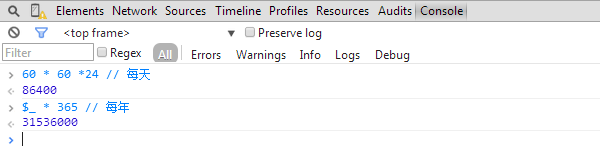
记录现任的 $0
调试的时候，很方便的取到选择的dom节点
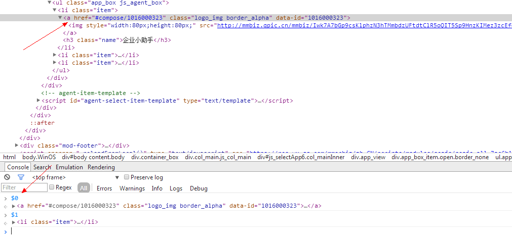
另外$1 $2 $3 $4 是前几次选择的dom，不过这几个就更不常用了。
简洁的 $(selector) 和 $$(selector)
很多时候，页面没有引入jQuery之类的库或者是这些库被作为模块加载到页面中，那么window中就不会有dom选择器，这时候我们一般会用：
1 | document.querySelector() |
或者是
1 | document.querySelectorAll() |
其实在Chrome中他们有两个好基友，分别是$(selector) 与 $$(selector)。有了这两位以后，再也不要输入那么长的API了。
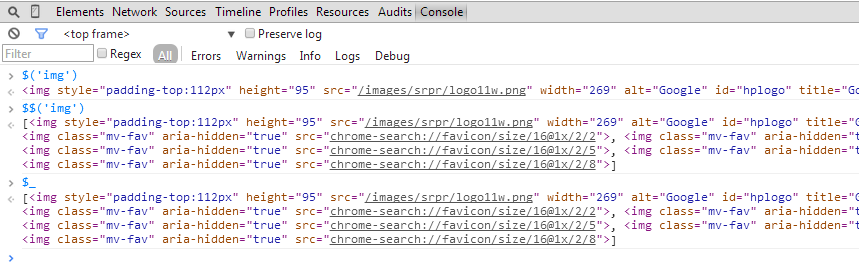
拷贝Object的 copy(Object)
右键复制HTML？不，有更好的：
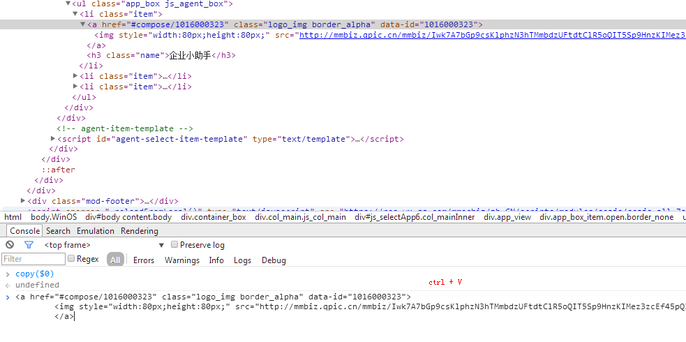
更优雅的打断点 debug(function)
很多时候，我们需要在运行到某一个方法的打个断点，之前的方式是打开这个文件，然后点一下，设置一个断点，但现在有一种很优雅的方式来做到这个：
比如，我想在jQuery.data方法的时候中断下：
对了，这幅图，还复习了前面两个优雅的方法。
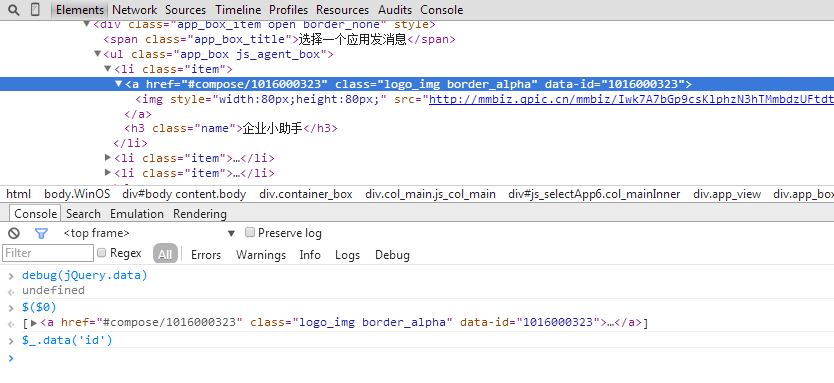
然后，就会跳转到sources调试的地方，这对于被压缩的代码，更是一种方便。
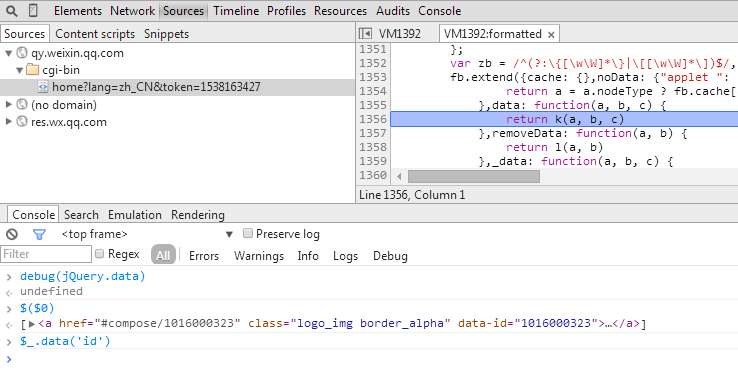
对了，取消的只要一行代码：
1 | undebug(function) |
列出对象的所有属性 dir(objcet) 和 列出事件的getEventListeners(object)
举个例子，我们想看一个dom节点的所有属性：
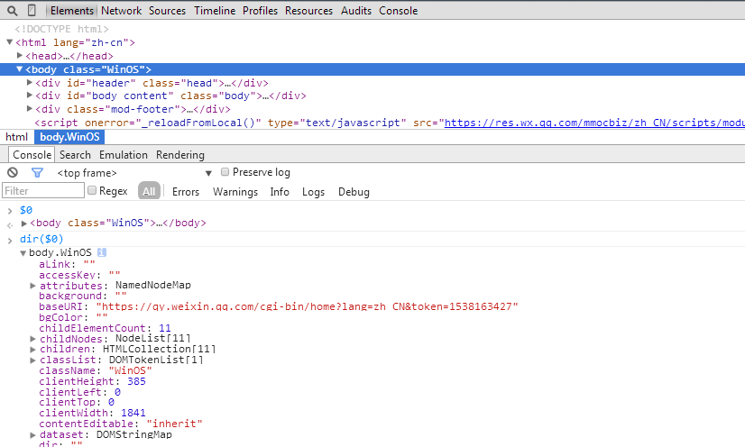
如果想看这个dom上都有一些什么事件：
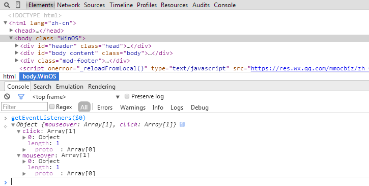
是不是很优雅~
记录方法的 monitor(function) 和 记录事件的 monitorEvents(object[, events])
还是用jQuery的data来举例，有时候我们只是想知道这个方法被调用几次还有参数之类的，那么可以
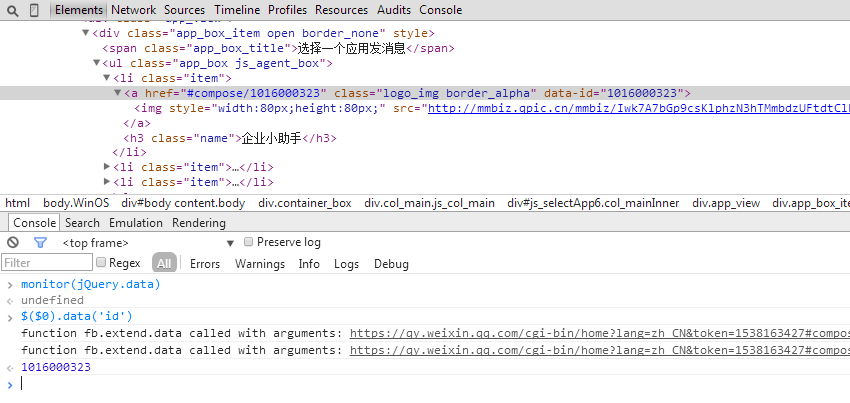
如果需要监控事件被调用了几次、event对象是什么：
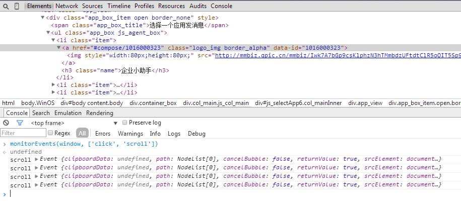
1 | monitorEvents(window, "resize"); unmonitorEvents(window, "resize"); monitorEvents(window, ["resize", "scroll"]) unmonitorEvents(window, ["resize", "scroll"]) |
可以监控的事件有：
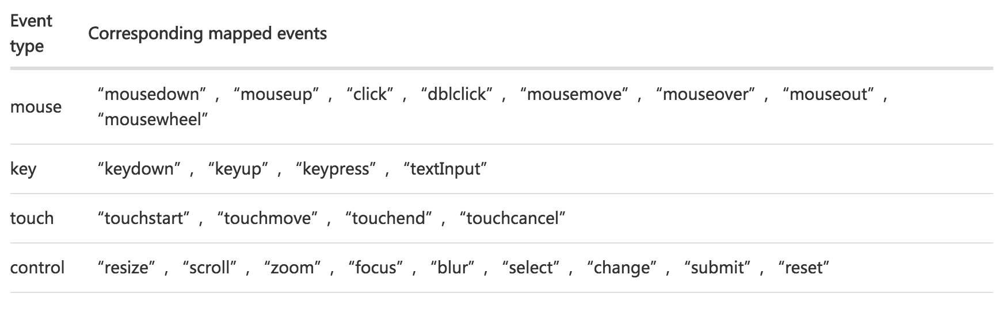
表格化显示object table(data[, columns])
和后台开发扯皮数据的时候特别有用，丢这截图给他，用你的优雅，亮瞎他，挥一挥衣袖，哈哈哈
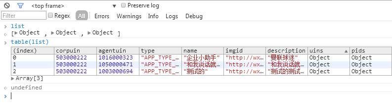